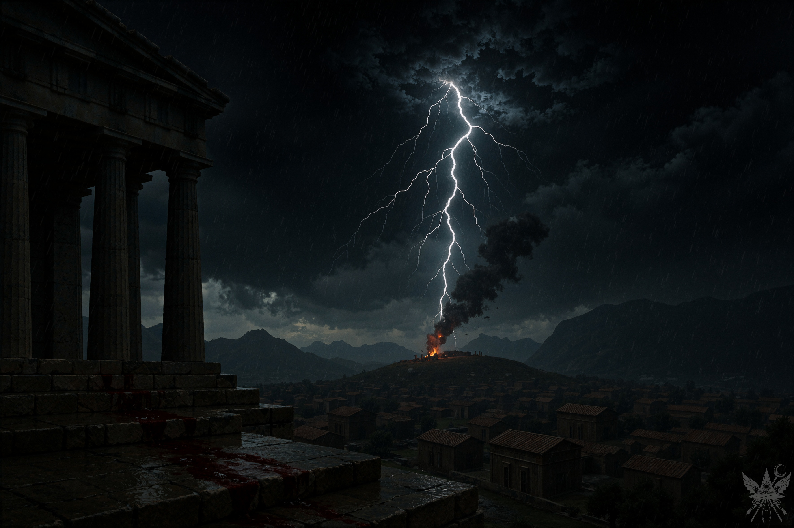
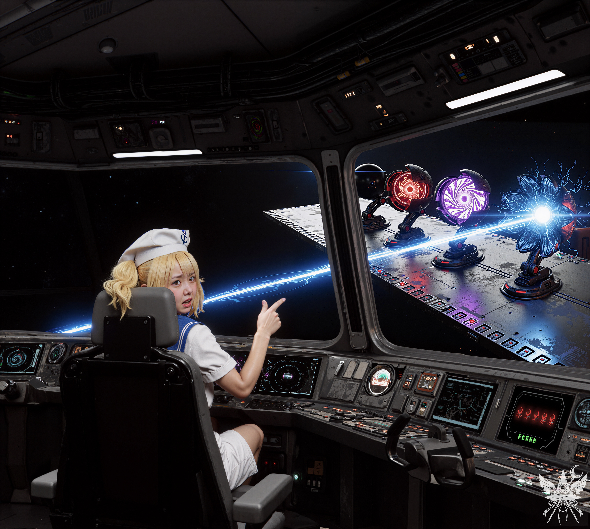

第38章 現実の悪夢

無機質な電子音と空調の冷たい風が、ガラス一枚を隔てた外の灼熱と絶望を完全に遮断していた。ネオンのように明滅する計器の光が、窓に映る自身の静かな横顔と、後方へと流れ去っていく赤茶けた不毛な大地を、二重露光のように重ね合わせている。
「練乳を塗ったトーストをご用意いたしました。お疲れのときには、甘いものがいちばんでございます」
ロボット少女のる～ことが、にこやかに、あり合わせの食材で作った即席のデザートを運んできた。長旅と絶え間ない緊張で疲弊しきっていたメデア、夢美、ちゆりの三人にとって、その甘い香りは何よりの慰めだった。
科学者の二人は、複雑な星図のモニターの前で頭を悩ませるメデアをじっと見守っていた。フレデリカ、シンギョク、幽香……これまで出会った者たちから得たわずかな宇宙論の知識を総動員し、メデアは複雑な図形と光のラインの繋がりを解き明かそうと食い入るように見つめる。
（もう、これ以上考えても答えは出ないわね。賭けてみるしかないわ）
「おそらく……魔界はここですね」
メデアは、地図上で「5」とナンバリングされた、不気味なアイコンが浮かぶ座標を指差した。
「おおっ！ ずいぶん遠いわね。ちゆり、距離を計算して！」
ちゆりはパネルに表示された数字のボタン「7」「4」「5」と、その隣にある「実行」ボタンを軽快な手つきで順番に叩いた。
『進路を確定しました』
パネルから無機質な機械音声が響く。
ちゆりは緑色に光るデータウィンドウを確認しながら口を開いた。
「えーっと……三次元空間での距離はたったの2パーセク、普通の燃料なら30分で着く距離だね。でも、四次元目がさ……夢美様、私たち、だいぶカタ[1]カタ：「アナ」と「カタ」は、四次元空間において、私たちが三次元空間で上下左右を用いるのと同様に、さらに加えて必要となる方向を示す言葉。方向に寄り過ぎちゃってて、アナの方向に1000万キロも移動しなきゃならないんだって。ハイパー燃料はまだたっぷりあるけど、飛行には数時間かかるよ」
「ちょっと、なんでそんなにカタに行き過ぎたのよ！」
「だって、あの薄暗い光に向かって行けって指示を出したのは夢美様じゃん！ そのせいで、こんな変な世界に迷い込んじゃったんだからさ」
ちゆりは大げさに肩をすくめ、呆れたようにため息をついた。
「もういいわ。とにかく出発しましょう。メデアさん、この世界に忘れ物はないわよね？」
（ああ、あの静かなる神殿……。二度とごめんだわ、あの石頭には。さよなら、コンガラ。どうぞご勝手に、清く正しく美しく生きていればいいわ。私はもう行くから）
「ええ、大丈夫です。魔界へ行く準備は整っています。必要な物は常に持ち歩いていますから」
「えらいじゃない。私たちなんて、事故のせいで機材も荷物もほとんどなくしちゃったのよ」
夢美は肩をすくめて笑った。
「事故……ですか？」
「何年も前にね、幻想郷を調べてて何度も着陸してたんだけど、ある日ちゆりが座標を間違えて、そのままドカーンと墜落しちゃったのよ」
「ちゆりが、ちゆりがって！ そもそも、まともな着陸地点なんてあの辺りにはなかったんだよ！ 夢美様も無茶言うよね。考えてもみてよ、軌道ステーションを乗っ取って、宇宙研究所に改造して、それで宇宙を飛び回るなんて正気の沙汰じゃないって！ いつか墜落するのは目に見えてたさ。……で、メデアさん、理香子の研究室には行ったんだろ？」
「ええ、行きました。地元の人たちは、あの場所を『魔法の遺跡』と呼んでいるみたいですけれど……」
ちゆりは腹を抱えて爆笑した。
「ははは、傑作！ 実はさ、あそこは私たちが昔使ってた軌道ステーションの残骸だって知ってた？ あの遺跡には魔法なんて欠片もないんだ……まあ、過去のことはもういいや。これから新しい旅が始まるんだ！ エンジン、始動だ！」
三人は、広大なガラス窓の向こうに夕暮れの地獄が広がる、メインの操縦室へと移動した。
「全システム起動！」
夢美が凛とした声で命じる。
「了解、船長！」
ちゆりは無数のスクリーンと計器が並ぶ巨大な制御盤の前に立ち、幾つかのスイッチを弾いた。
「通常エンジン起動！」
「了解、船長！」
メデアは窓際に配置された未来的なデザインの座席に腰を下ろした。見た目に反して、驚くほど座り心地が良い。どこからか、空気が圧縮されるようなシューという音と、冷却液が循環する低い駆動音が響き、円盤はゆっくりと赤茶けた大地から浮上し始めた。
うんざりするほど歩かされた地獄の乾いた景色が、音もなく遠ざかっていく。遠くには静かなる神殿のシルエットが見えたが、それもすぐにちっぽけな点へと変わり、やがて漆黒の宇宙の闇へと溶けていった。
「超空間エンジンを起動！」
「了解、船長！」
「操縦士は丸一日断食！」
「了解、船長！ ……って、夢美様、もうやめてよ！」
ちゆりはコンソールの奥から顔を出し、未知の宙域へ神秘的な視線を向ける夢美の隣へと歩み寄った。
「自動操縦を有効にしたよ。一番時間がかかるのは最初の遷移だ。あとは何とか乗り切るってさ」
窓の外の暗黒空間が毒々しい紫色に歪み、点在していた星々の光が、引き伸ばされた無数の線へと変貌した。
「よし、それじゃあ、私は一眠りさせてもらうわね！」
夢美は船長席から優雅に立ち上がると、振り返って言った。
「メデアさんもお疲れでしょう？ 部屋を用意するわ」
（あの禁欲的な狂信者たちの、石のように硬い粗末な寝床とは大違いね。充実した一日の終わりに、ふかふかのベッドで休めるなら大歓迎だわ）
「ええ、お言葉に甘えます」
メデアが夢美の後について区画を出ようとすると、ちゆりが慌てて追いかけてきた。
「ちょっと！ 私も休みたいんだけどさー！」
「ちゆりはそこにいなさい！ 何か不測の事態が起きたら、誰が手動操縦するのよ？ 5時間後に交代してあげるから、それまでしっかりモニターを見張っていること！」
「もう、なんて人使いが荒いのさ……。ねえメデアさん、一緒にここにいてよ！ 私の大発見について話してあげるからさ！」
「ごめんなさいね、ちゆり。本当に酷く疲れていて……。お話は、また後でゆっくり聞かせてもらいますね」
案内された小さな船室には、清潔で柔らかいベッドが設えられていた。
「お召し物はこちらへどうぞ。わたくしが洗濯いたします」
る～ことの柔らかな声が、微睡みかけていたメデアの意識を引き戻す。
メデアは小さな机の上に魔導書、金のドラクマ、そして静かなる護符を並べた。埃まみれのローブを脱ぎ、用意された衣服に着替える。最後に念のため、簡単な呪文を試してみたが、指先から放たれた魔力は問題なく機能した。
深い安堵と共にベッドに身を沈めると、メデアの意識は泥のように重い眠りへと落ちていった。
＊＊＊

血の匂いがした。
冷たい雨が、頬を容赦なく打ち据える。
神々の冷酷な視線を感じさせる暗雲を、メーデイアは底知れぬ憎悪で見上げた。吹き荒れる嵐の風が長い黒髪を乱し、濡れた肌にまとわりつく。足元の石段には、鮮血が雨水と混ざり合いながらどす黒く流れ落ちていた。
「なぜ……なぜ、あの子たちを殺したのだ……！」
雷鳴轟く神殿の階段で、革の鎧をまとった男が泥に塗れて座り込んでいた。血まみれになった二人の小さな躯を腕に抱き、男の目からは雨に紛れて涙がとめどなく溢れ出ている。だが、その顔にあるのは肉体的な苦痛ではなく、ただ己の身に起きた悲劇の理由を理解できないという、愚かな戸惑いだけだった。
メーデイアは視線を空へと向けた。二頭のドラゴンが引く戦車は、すでにコリントス[2]コリントス：古代ギリシャの都市国家。の街の上空に差し掛かっている。足下で絶望に咽び泣く男を見下ろしながら、彼女は氷のように冷酷な声で言い放った。
「裏切り者の血よ、イアーソーン。私を裏切ったあなたは、子供たちをも裏切ったのよ。それとも、あの小娘が母親代わりになれるとでも思ったのかしら？」
「ああ、神々よ！ この女に呪いを！ メーデイア、いつの日か、お前は自らの残酷な行いの報いを受けるだろう！ もう二度と……幸せにはなれぬぞ！」
「さらば、イアーソーン」
メーデイアは神殿の傍らに降り立った戦車に乗り込み、再び暗黒の空へと舞い上がった。炎上する王宮から立ち昇る黒煙と、憎むべきコリントスの街並みを、これが永遠の別れだと心に刻みつけるように見下ろした。
（私の可愛い子供たち……。あなたたちを守れなくて、ごめんなさい。コリントスの民は……私より早かった。でも、感謝しているわ。あなたたちの死は、永遠にあの男の心を蝕むでしょう。イアーソーン……あなたは当然の報いを受けるのよ）
その時、メーデイアの真上で分厚い雲が轟音と共に裂け、天空から巨大な稲妻が戦車へと直撃した。
ドラゴンが鼓膜を破るような悲鳴を上げ、制御を失った戦車が真っ逆さまに急降下していく。炎に包まれたコリントスの大地が、凄まじい速度で迫ってくる——。
＊＊＊
メデアは大きく酸素を吸い込み、跳ね起きるように目を覚ました。
シーツを握りしめる手には、びっしょりと冷や汗をかいている。ここは神話の時代ではなく、広大な宇宙を航行する船の、柔らかいベッドの上だ。
（なんて夢……。まるで別人のように残酷な……。ああ、でも、あれは私じゃない。神話のメーデイア……。子供たちを自ら殺したと後世に語り継がれているなんて、哀れな女。きっと復讐のために、そう見せかけただけなのに……。同じ名前を持つなんて、酷な運命ね）
乱れた呼吸を整えようとした直後、耳をつんざくような轟音が船内全体を揺るがした。
一度ではない。間髪入れずに叩きつけられる衝撃とアラートの絶叫は、悪夢がまだ現実で続いていると錯覚させるほど激しかった。
（一体、何が起きているの……！？）
ローブを引っ掛け、ポケットの中に必要な道具が揃っているか確認すると、メデアは激しく揺れる通路を蹴って中央区画へと駆け出した。
操縦室に飛び込んだメデアの目に飛び込んできたのは、窓の外で青白く発光する致死的な閃光だった。
漆黒の宇宙空間に、禍々しいエネルギーを纏った自律型の機械砲台が五つ、陣形を組んで船の行く手を塞いでいる。装甲を開いた青いコアから放たれた極太のレーザーが、船体を掠めて眩いハレーションを引き起こしていた。
アラートの赤い光が明滅する中、操縦席のちゆりと、隣に立つ夢美の顔色は紙のように蒼白だった。

「だから言ったじゃん！ 魚雷で攻撃するしかないって！」
ちゆりは操縦桿を握りしめながら、窓の外の砲台群を指差して声を荒らげた。
「魚雷はあと三発しかないのよ！ 全部命中させたとしても、残りの二つにこの船を粉々にされてしまうわ！」
「じゃあ、どうするって言うんだよ！？」
「ジェット噴射で焼き尽くすわ！ あの時、海賊から逃げ出した時のこと、覚えているでしょう？」
「それで燃料を探して、あの野蛮な惑星に一週間も足止め食らった話？ 帰りの燃料もほとんどないってのに！ 魚雷を使わないなら、一気に加速して強行突破するとかさ！」
「船に穴を開ける気！？ ほんっとに頭いいわね、ちゆり！」
「一体何が起きているんですか！？ どうしてこんなことに……？」
メデアが怒鳴るように尋ねると、夢美が忌々しげに舌打ちをして振り返った。
「あなたったら、こんな厄介なところに連れてきて！ もうすぐ着くところだったのに……。どうやら魔界の入り口を守っている防衛システムみたいで、撤退しようとしても執拗に追いかけてきて逃がしてくれないのよ！ 弾薬は海賊との戦闘で使い果たしてしまったし、魚雷はたった三発。レーザー兵器も装甲に弾かれて効かないし……。何かいい考えはないかしら？」
再び重低音が響き、船体が大きく傾いた。エネルギー弾の直撃を受け、船内の照明が一瞬落ちて不吉な火花が散る。
（一難去ってまた一難、ね……）
メデアは即座に魔導書を開き、紙面を猛烈な勢いでめくって役に立ちそうな術式を探した。
（えっと、『魔法の反射』……。かなり高度な呪文だわ。直接対象のエネルギーに触れないと効果が発揮されないけれど……。まさか、私にこの生身で、宇宙空間へ飛び出せとでも言うつもりかしら……？）